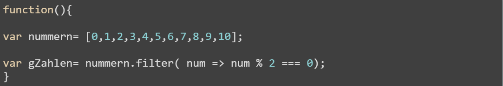
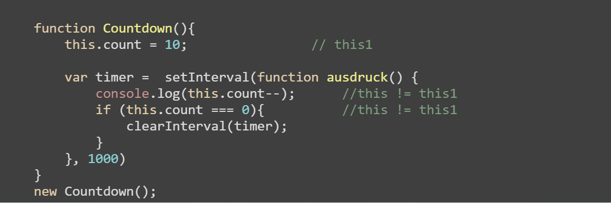
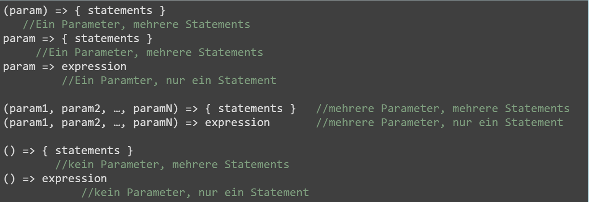

Woher kommen Arrow-Functions?
Im Zuge von ECMAScript 6 ist ein neues Feature für Javascript standardisiert worden: Arrow-Functions
Praktische Verwendung:
In Arrow-Function-Form
Dies ist ein Beispielscode für häufig gemachte Fehler mit Javascript
Syntaktischer Aufbau von Arrow-Functions
Vielen Dank für eure Aufmerksamkeit!l